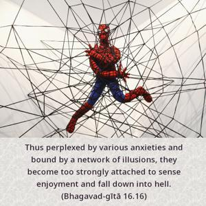
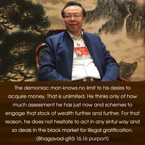

Thus perplexed by various anxieties and bound by a network of illusions, they become too strongly attached to sense enjoyment and fall down into hell.


The demoniac man knows no limit to his desire to acquire money. That is unlimited. He thinks only of how much assessment he has just now and schemes to engage that stock of wealth further and further. For that reason, he does not hesitate to act in any sinful way and so deals in the black market for illegal gratification. He is enamored by the possessions he has already, such as land, family, house and bank balance, and he is always planning to improve them. He believes in his own strength, and he does not know that whatever he is gaining is due to his past good deeds. He is given an opportunity to accumulate such things, but he has no conception of past causes. He simply thinks that all his mass of wealth is due to his own endeavor. A demoniac person believes in the strength of his personal work, not in the law of karma. According to the law of karma, a man takes his birth in a high family, or becomes rich, or very well educated, or very beautiful because of good work in the past. The demoniac think that all these things are accidental and due to the strength of one’s personal ability. They do not sense any arrangement behind all the varieties of people, beauty and education. Anyone who comes into competition with such a demoniac man is his enemy. There are many demoniac people, and each is enemy to the others. This enmity becomes more and more deep – between persons, then between families, then between societies, and at last between nations. Therefore there is constant strife, war and enmity all over the world.
Each demoniac person thinks that he can live at the sacrifice of all others. Generally, a demoniac person thinks of himself as the Supreme God, and a demoniac preacher tells his followers: “Why are you seeking God elsewhere? You are all yourselves God! Whatever you like, you can do. Don’t believe in God. Throw away God. God is dead.” These are the demoniac’s preachings.
Although the demoniac person sees others equally rich and influential, or even more so, he thinks that no one is richer than he and that no one is more influential than he. As far as promotion to the higher planetary system is concerned, he does not believe in performing yajñas, or sacrifices. Demons think that they will manufacture their own process of yajña and prepare some machine by which they will be able to reach any higher planet. The best example of such a demoniac man was Rāvaṇa. He offered a program to the people by which he would prepare a staircase so that anyone could reach the heavenly planets without performing sacrifices, such as are prescribed in the Vedas. Similarly, in the present age such demoniac men are striving to reach the higher planetary systems by mechanical arrangements. These are examples of bewilderment. The result is that, without their knowledge, they are gliding toward hell. Here the Sanskrit word moha-jāla is very significant. Jāla means “net”; like fish caught in a net, they have no way to come out.